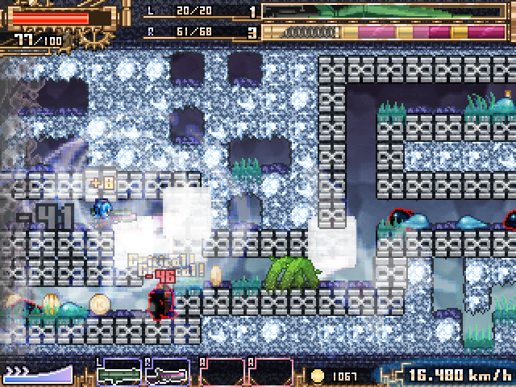
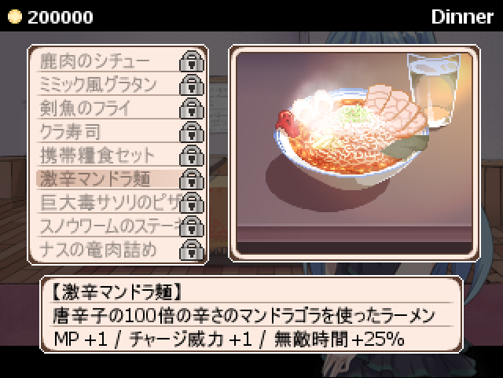

管理人コメント「飯テロ（ドット）ですら全力が見られる…感じる…これはやべぇやつだ…」
エントリーNo31
[部分編集]

様々な地形パターンが登場する

腹いっぱい食べてから出撃だ
| 公開先：d31 | 感想掲示板 |
| タイトル | 風呂鳥 |
| 作者 | 鳥in風呂 |
| ジャンル:ローグライトアクション 使用ツール:Steam2003(MP) | |
| プレイ時間 | ？ |
| 紅白2017に出したものがひとまず遊べる感じになってきたので進捗報告です（いわゆるベータ版） ここからコンテンツを増やしていって | |
◆わかりづらい点（今は拠点からヒントが得られないのでここに書いておきます。読んだ方がいいよ！）
・左側に撃ち込むと画面のスクロール速度をある程度下げられる 画面右端に触れると速くなるので注意
・敵が左側に飲み込まれるとHP量に応じてスクロール速度が上がる
・依頼を受注してクリアしないとボスが出ない（エンドレスモードになる）
・敵に気付かれずに殴り掛かるとクリティカル（ダメージ二倍）が入る
・敵との視線が通ると気付かれる（草むらで視線を多少切れる）
・隠密ミッションは気付かれていない状態の敵を影に飲み込ませるのが条件
・チャージ中はほぼ全てのダメージを無効化し、接触ダメージを持つ物体も無傷ですり抜ける
・竜巻みたいなアイコンはチャージのダメージ強化、波動砲みたいなアイコンは最大MP（連続でチャージできる回数に影響）
・装備をアップグレードするとダンジョン内での出現率が上がる 上げた後も確率上昇を無効化できる
・装備をアップグレードしても装備の性能は一切上がらない
・泉にアイテムを投げ込むといいことがあるかも 泉から帰還すると金を全額と装備を全て持ち帰れる（登録にはさらにそこから拠点へ帰る）
・長押しすると効果が変わる武器がある
・敵を殺すほど黒い敵が増える 黒い敵は二倍のHPと攻撃力を持ち素早い
・出てくる地形パターンは敵のキル数で変わる
・ハイテンションは攻撃を食らったり攻撃的な行動で維持できる
・長居しすぎると速くなってえらいことになる
・巫女さんはチャージと槍の爆発が鍵
・敵が左側に飲み込まれるとHP量に応じてスクロール速度が上がる
・依頼を受注してクリアしないとボスが出ない（エンドレスモードになる）
・敵に気付かれずに殴り掛かるとクリティカル（ダメージ二倍）が入る
・敵との視線が通ると気付かれる（草むらで視線を多少切れる）
・隠密ミッションは気付かれていない状態の敵を影に飲み込ませるのが条件
・チャージ中はほぼ全てのダメージを無効化し、接触ダメージを持つ物体も無傷ですり抜ける
・竜巻みたいなアイコンはチャージのダメージ強化、波動砲みたいなアイコンは最大MP（連続でチャージできる回数に影響）
・装備をアップグレードするとダンジョン内での出現率が上がる 上げた後も確率上昇を無効化できる
・装備をアップグレードしても装備の性能は一切上がらない
・泉にアイテムを投げ込むといいことがあるかも 泉から帰還すると金を全額と装備を全て持ち帰れる（登録にはさらにそこから拠点へ帰る）
・長押しすると効果が変わる武器がある
・敵を殺すほど黒い敵が増える 黒い敵は二倍のHPと攻撃力を持ち素早い
・出てくる地形パターンは敵のキル数で変わる
・ハイテンションは攻撃を食らったり攻撃的な行動で維持できる
・長居しすぎると速くなってえらいことになる
・巫女さんはチャージと槍の爆発が鍵
◆追加 / 変更（もう過去verを覚えてないので推定）
・ステージを2つ追加
・ステージ1にボスを実装
・自動生成処理を一新
・新規武器 / アクセサリ
・料理を追加（拠点で料理を選択しておくと能力にボーナスが得られる）
・能力アップアイテム
・ミッション（能力アップアイテムを報酬として得られ、クリアでボスに到達。複数選択可）
・落下ダメージ（敵のみ）
・ダメージ表示
・キーコンフィグ
・サウンドテストモード
・その他いろいろ
・ステージ1にボスを実装
・自動生成処理を一新
・新規武器 / アクセサリ
・料理を追加（拠点で料理を選択しておくと能力にボーナスが得られる）
・能力アップアイテム
・ミッション（能力アップアイテムを報酬として得られ、クリアでボスに到達。複数選択可）
・落下ダメージ（敵のみ）
・ダメージ表示
・キーコンフィグ
・サウンドテストモード
・その他いろいろ
◆おわび
・もっと早くにより多くの追加要素を付けて出すつもりでしたが色々あって削減されました
2面/3面の道中BGMは後回しになったので1面と同じになってたりなどします ごめぴ
会話イベントもほぼフルカットです
2面/3面の道中BGMは後回しになったので1面と同じになってたりなどします ごめぴ
会話イベントもほぼフルカットです
◆更新履歴（現行：fix10）
fix10
・ブッチャーのミッションを受けた時に出現確率が下がっていたのを修正
・メドーナとゴブリンが1面の最初で出ることがあったのを修正
・隠密ミッションで対象がおかしいことがあったのを修正
・ブッチャーのミッションを受けた時に出現確率が下がっていたのを修正
・メドーナとゴブリンが1面の最初で出ることがあったのを修正
・隠密ミッションで対象がおかしいことがあったのを修正
・ブッチャーのHPを192から280に変更
・ロングソード系のランク2武器を実装
fix9
・操作プレビューをした後に出撃でアクセサリがおかしくなっていたのを修正
・ニトロブラッドの効果が一部の敵に無効になっていたのを修正
・柱が通れなくなるバグをおそらく修正
・ドラゴニュートがアイテムを落とさないことがある不具合を修正
・3面ボスの最終形態で攻撃を反射するなどすると即死していたのを修正
・操作プレビューをした後に出撃でアクセサリがおかしくなっていたのを修正
・ニトロブラッドの効果が一部の敵に無効になっていたのを修正
・柱が通れなくなるバグをおそらく修正
・ドラゴニュートがアイテムを落とさないことがある不具合を修正
・3面ボスの最終形態で攻撃を反射するなどすると即死していたのを修正
・エンシェントウィスプが3面で出るように変更
・ポイズンスライムが3面で出ないように変更
・2面の泉の生成がおかしいことがあるのを多分きっと修正
・フロストボルト系が分散エイム時に向きがおかしいのを修正
・BGMがきちんとレコードに追加されるように修正
・3面ボスによる画面効果が帰還時に消えるように修正
・ボス前の柱の穴を塞ぐブロックが消えていたのを修正
・雑魚敵が影に飲まれた時に効果音を出すように修正
・メドーナなど一部の強制視認してくる敵が隠密Anyミッションの対象に入っていたのを修正
・2面ボスのHPを一度に半分以上削るとバリアと翼が復活するように変更
・アンロックした武器を送ってもそれ以上アップグレードされないように変更
・店のUIをアンロック済みかどうかわかりやすくなるように変更
・ほとんどのアイテムの値段を引き上げ
・スライムの落下ダメージ限界を引き下げ（ダメージが入りやすくなった）
・ミッションのターゲットの敵が出やすくなるように変更
・メドーナが2面に出るように変更
・チャージのダメージを通常ダメージから貫通ダメージに変更
・一部達成困難なミッションの必要数を軽減
・泉に装備を投げ込んだ際に装備変更ミッションが進むように変更
・ギミック破壊ミッションの対象に有刺鉄線が含まれるように変更
・2面のギミック破壊ミッションの必要数を引き上げ
・マグマダイバーのHPを1200から1400に変更
・ポイズンスライムが3面で出ないように変更
・2面の泉の生成がおかしいことがあるのを多分きっと修正
・フロストボルト系が分散エイム時に向きがおかしいのを修正
・BGMがきちんとレコードに追加されるように修正
・3面ボスによる画面効果が帰還時に消えるように修正
・ボス前の柱の穴を塞ぐブロックが消えていたのを修正
・雑魚敵が影に飲まれた時に効果音を出すように修正
・メドーナなど一部の強制視認してくる敵が隠密Anyミッションの対象に入っていたのを修正
・2面ボスのHPを一度に半分以上削るとバリアと翼が復活するように変更
・アンロックした武器を送ってもそれ以上アップグレードされないように変更
・店のUIをアンロック済みかどうかわかりやすくなるように変更
・ほとんどのアイテムの値段を引き上げ
・スライムの落下ダメージ限界を引き下げ（ダメージが入りやすくなった）
・ミッションのターゲットの敵が出やすくなるように変更
・メドーナが2面に出るように変更
・チャージのダメージを通常ダメージから貫通ダメージに変更
・一部達成困難なミッションの必要数を軽減
・泉に装備を投げ込んだ際に装備変更ミッションが進むように変更
・ギミック破壊ミッションの対象に有刺鉄線が含まれるように変更
・2面のギミック破壊ミッションの必要数を引き上げ
・マグマダイバーのHPを1200から1400に変更
fix8
・2面の泉の後に空白が長く続く不具合をたぶん修正
・ステージを跨いだ際にキル数などがリセットされる不具合をたぶん修正
・2面の泉の後に空白が長く続く不具合をたぶん修正
・ステージを跨いだ際にキル数などがリセットされる不具合をたぶん修正
fix7
・HPが上昇するアクセサリを装備していると死ぬバグの修正
・2面無限ガーゴイル地帯をすぐ終わるように修正
・2面で泉が出づらかったのを修正
・3面でブロックが一切ない地形が出るのを修正
・3面で特定の敵がすぐに復活するのを多分修正
・柱が通れなくなるのを多分修正
・HPが上昇するアクセサリを装備していると死ぬバグの修正
・2面無限ガーゴイル地帯をすぐ終わるように修正
・2面で泉が出づらかったのを修正
・3面でブロックが一切ない地形が出るのを修正
・3面で特定の敵がすぐに復活するのを多分修正
・柱が通れなくなるのを多分修正
・武器の説明を拠点に送っていなくても見れるように変更
・ショットガン系の最大弾薬数を弱体化
・マシンガン系の最大弾薬数を強化
・リボルバー系の最大弾薬数を強化
・フロストボルト系を強化
・フロストボルト系の弾薬画像を差し替え
・ナイトメーカーの持続時間を1秒延長
・武器の説明追加（ロケットランチャー系、フロストボルト系、ナイトメーカー）
・一面のイバラ地帯の難易度低減
・セーブ時にSavingと表示するように
・一部ミッションの要求数緩和
・2面のトラバサミに近づくとマーカーを表示するように変更
・強制加速のリミットを大幅に緩和
・三面ボスを倒して帰還した時に装備や所持金を持ち帰るように変更
・ショットガン系の最大弾薬数を弱体化
・マシンガン系の最大弾薬数を強化
・リボルバー系の最大弾薬数を強化
・フロストボルト系を強化
・フロストボルト系の弾薬画像を差し替え
・ナイトメーカーの持続時間を1秒延長
・武器の説明追加（ロケットランチャー系、フロストボルト系、ナイトメーカー）
・一面のイバラ地帯の難易度低減
・セーブ時にSavingと表示するように
・一部ミッションの要求数緩和
・2面のトラバサミに近づくとマーカーを表示するように変更
・強制加速のリミットを大幅に緩和
・三面ボスを倒して帰還した時に装備や所持金を持ち帰るように変更
fix6
・二面に宝箱がほとんど出ないようになっていたのを修正
・二面に宝箱がほとんど出ないようになっていたのを修正
fix5
・武器が次のステージに持ち越すときに動かなくなる不具合の修正
・マグマダイバーがボス中や別の面に出てこなくなるように（おそらく）修正
・泉が出づらくなっていたのを修正
・武器が次のステージに持ち越すときに動かなくなる不具合の修正
・マグマダイバーがボス中や別の面に出てこなくなるように（おそらく）修正
・泉が出づらくなっていたのを修正
fix4
・三面の特定の敵を倒すとゲームが落ちるので封印（修正後再登場予定）
・三面の特定の敵を倒すとゲームが落ちるので封印（修正後再登場予定）
fix3
・泉から送った時点でセーブするように変更
・二面の特定の地形が非常に長い間続く不具合の修正
・泉から送った時点でセーブするように変更
・二面の特定の地形が非常に長い間続く不具合の修正
fix2
・地形生成がおかしくなっていたのを修正
・二面ボスの入り口がふさがっていなかったのを修正
・地形生成がおかしくなっていたのを修正
・二面ボスの入り口がふさがっていなかったのを修正
fix1
・二面と三面がスキップされる不具合の修正
・ゴミデータが蓄積して重くなる不具合の修正
・戻るたびに金がリセットされる不具合の修正
・再起動で武器の収集率などの進捗が消える不具合の修正
・一定条件下でどんどん速くなる不具合の修正
・二面と三面がスキップされる不具合の修正
・ゴミデータが蓄積して重くなる不具合の修正
・戻るたびに金がリセットされる不具合の修正
・再起動で武器の収集率などの進捗が消える不具合の修正
・一定条件下でどんどん速くなる不具合の修正
・泉で虚無が送れる不具合の修正
・せっかく作ったのにテーブルに入ってない武器の追加
・ボス前の補給品を変更、かつ分かりやすい場所に移動
・難易度をやや低下
・イバラだらけの地形の足場を耐久ありのものに変更
・宝箱からHP回復と弾薬回復が一つずつ出るように変更
・イバラのダメージを30から20に変更、接触時の無敵時間を1.5秒から3秒に変更
・一面ボスの剣のHPを200から100に変更
・装備アイテムの接触範囲を拡張
・ホーネットの当たり判定を拡張（攻撃を当てやすくなった）
・せっかく作ったのにテーブルに入ってない武器の追加
・ボス前の補給品を変更、かつ分かりやすい場所に移動
・難易度をやや低下
・イバラだらけの地形の足場を耐久ありのものに変更
・宝箱からHP回復と弾薬回復が一つずつ出るように変更
・イバラのダメージを30から20に変更、接触時の無敵時間を1.5秒から3秒に変更
・一面ボスの剣のHPを200から100に変更
・装備アイテムの接触範囲を拡張
・ホーネットの当たり判定を拡張（攻撃を当てやすくなった）
当プロジェクトは茄子的な理由により
No.18 Doradora Island Saga: Legacy
の協賛でお送りいたします（ほんまか？）
この作品は動画化/配信を許可しています
いいねと思ったら押してください
最終更新：2023年03月24日 18:10